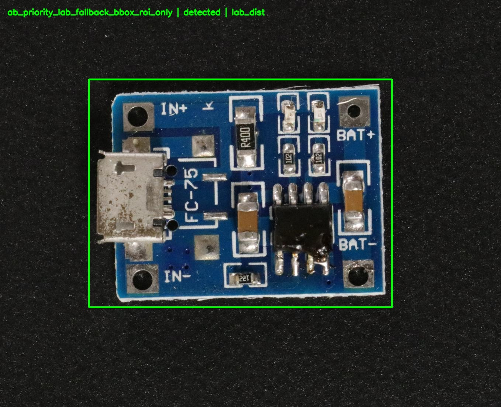
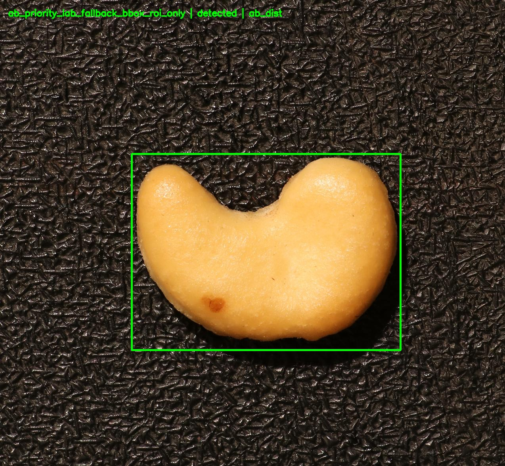
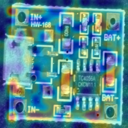
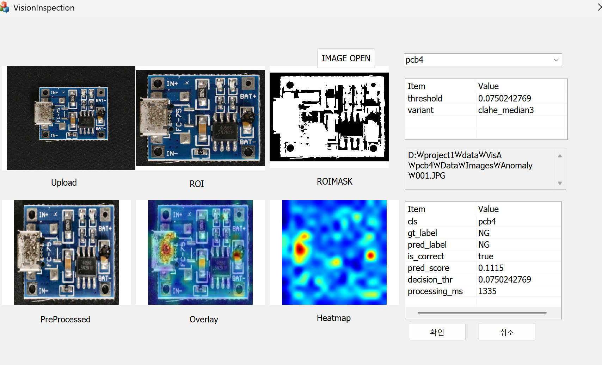

이전 경험
머신비전 회사에서 알고리즘 자체보다는 MFC 기반 운영 UI, 검사 결과 확인, 오검출/미검출 분석, 판정 조건 변경 전후 비교 같은 업무를 맡았습니다. 그래서 단순 모델 성능보다 현장에서 어떻게 쓰이고 검증되는지에 더 익숙합니다.
CV/ML Engineer · Vision Inspection
머신비전 회사에서 MFC 기반 UI와 검사 결과 분석 업무를 수행했고, 지금은 그 경험을 바탕으로 ROI 전처리 → 이상탐지 → 운영 임계값 튜닝 → FastAPI 서빙 → MFC 데모 연동까지 이어지는 생산형 비전 검사 프로젝트를 구축했습니다.
About
머신비전 회사에서 알고리즘 자체보다는 MFC 기반 운영 UI, 검사 결과 확인, 오검출/미검출 분석, 판정 조건 변경 전후 비교 같은 업무를 맡았습니다. 그래서 단순 모델 성능보다 현장에서 어떻게 쓰이고 검증되는지에 더 익숙합니다.
이번 프로젝트는 README 내용을 그대로 늘어놓는 대신, 취업용 포트폴리오 관점에서 문제 정의, 실험 설계, 운영 정책, API 데모까지 한 흐름으로 재정리했습니다.
머신비전 소프트웨어, 비전 검사, Computer Vision, Applied ML, ML Engineer 포지션에 맞춰 구성했습니다. 핵심은 실험만 한 사람이 아니라 운영을 생각하는 사람으로 보이게 하는 것입니다.
Featured Project
ROI 전처리, 이상탐지, Heatmap/Overlay 해석, 임계값 재구성, Drift Monitoring, FastAPI 서빙, MFC 데모 클라이언트까지 연결한 생산형 비전 검사 프로젝트.
조명, 카메라 상태, 배경, 생산 라인 변화 때문에 입력 품질이 흔들리면 단순 OK/NG 분류만으로는 운영이 불안정해지고 FP/FN 원인 분석도 어려워집니다.
원본 이미지에서 ROI를 안정적으로 추출하고, 전처리·이상점수·Heatmap·Threshold 정책을 정리한 뒤, 실제 운영 흐름에 가깝게 API와 MFC 데모까지 연결하는 것입니다.
VisA 데이터셋의 pcb4, cashew 카테고리를 사용했습니다. 서로 다른 형태와 표면 특성을 비교하면서 전처리 선택의 차이를 확인했습니다.
Raw Image → ROI / Crop → Resize / Normalize → Patch Memory-Bank Anomaly Detection → Score / Heatmap / Overlay → Threshold-based Decision → FP/FN Analysis → Filter Extension Experiments → Final Operating Threshold → Drift Monitoring / Retrain Trigger → FastAPI Response → MFC Demo Client
Results
같은 전처리를 모든 카테고리에 일괄 적용하지 않고, 각 객체의 표면 특성과 FP/FN 패턴을 기준으로 선택했습니다.
가장 높은 단일 지표만 보기보다 운영상 defect leakage를 줄이는 방향으로 조합을 선택했습니다.
비교용 F1-optimal threshold와 실제 운영용 recall-priority threshold를 분리해 설계했습니다.
| Category | Version | Threshold | Precision | Recall | FP | FN | AUROC |
|---|---|---|---|---|---|---|---|
| pcb4 | CLAHE + Median3 | 0.0750242769 | 0.5882 | 0.9000 | 63 | 10 | 0.9750 |
| cashew | ROI-only + Median5 | 0.0498208888 | 0.6573 | 0.9400 | 49 | 6 | 0.96976 |
Visuals
아래 경로는 README에서 사용하던 상대 경로를 그대로 사용합니다. 현재 프로젝트 리포지토리에 이미지가 있으면 GitHub Pages에서도 그대로 표시됩니다.




Demo & Architecture
업로드된 raw 이미지를 저장하고, 카테고리별 ROI와 전처리를 거쳐 score/heatmap/overlay를 생성한 뒤, threshold 기반 판정을 JSON으로 반환합니다.
Windows 데스크톱 환경에서 이미지를 선택하고 `cls`, `gt_label`, `source_path`를 전달해 서버 응답과 결과 이미지를 바로 확인하는 흐름까지 검증했습니다.
score distribution, gray/gradient statistics, predicted anomaly ratio를 기준으로 weak / moderate / severe drift를 판단하는 skeleton을 추가했습니다.
Why This Matters
모델 점수만 정리한 것이 아니라, 임계값 정책과 FP/FN 해석을 운영 관점으로 재구성했습니다.
기존 경력의 강점인 검사 UI/결과 해석 경험이 FastAPI + MFC 데모 흐름과 직접 이어집니다.
ROI, 전처리, 이상탐지, 서빙, 모니터링을 묶어서 이후 CV/ML 포지션으로 확장 가능한 형태로 보여줍니다.
Contact
아래 링크는 업로드 전에 본인 정보로 교체하세요.